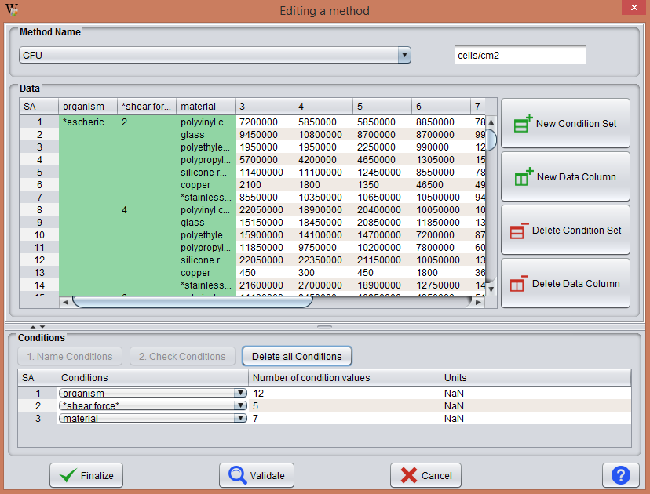

This operation is similar to load experiment operation, except that in this case the program knows in advance the conditions of the method, which are already reflected in the Conditions table and may already have some data on the Data table.
